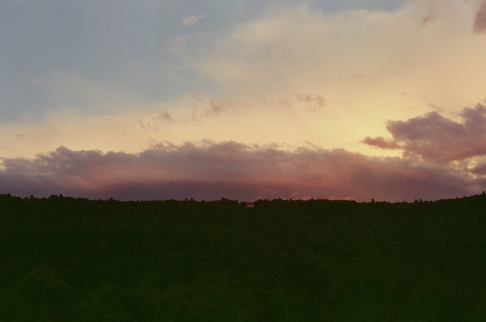
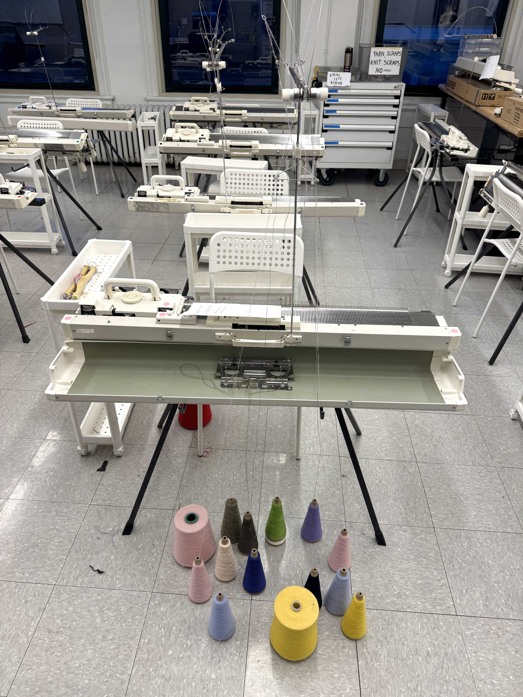
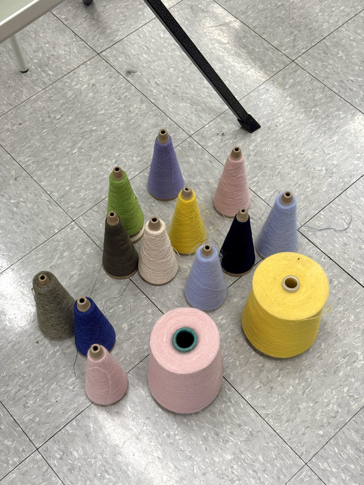
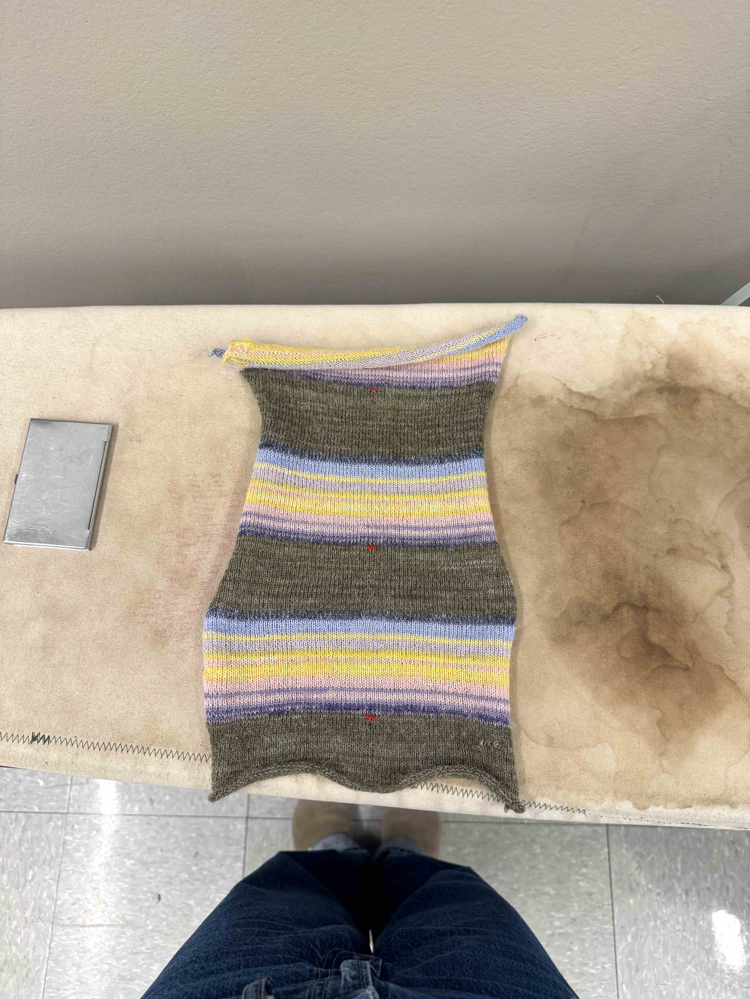
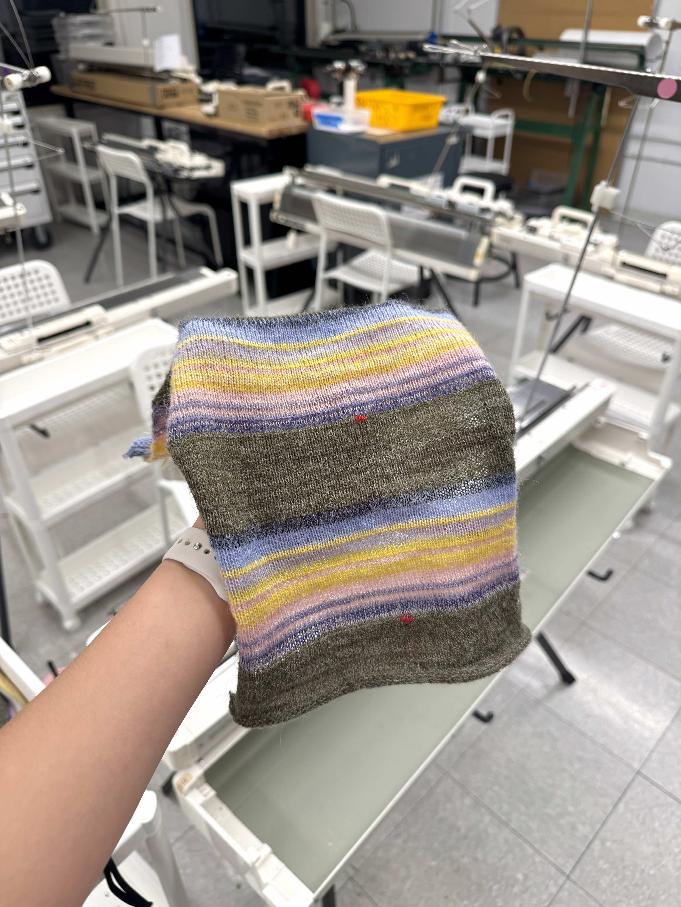
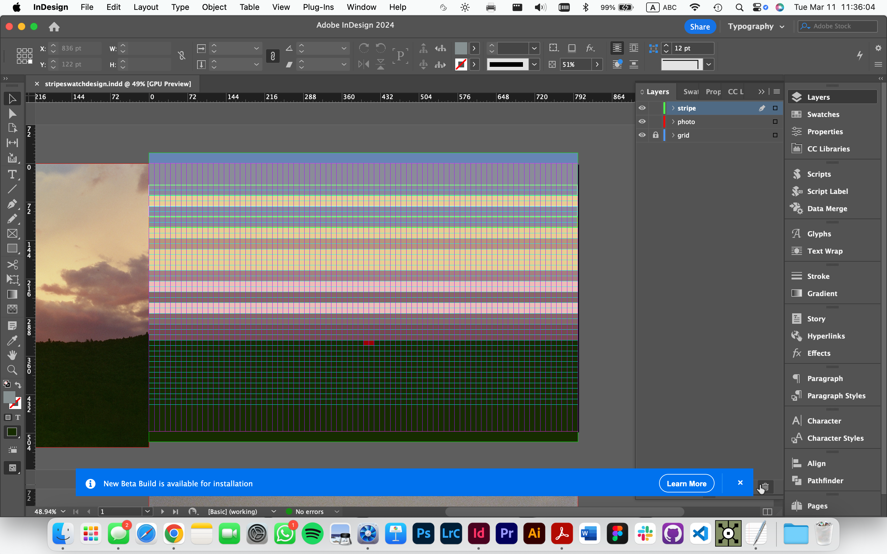

stripe project (Feb 2025)
for MACHINE KNITTING 1 with Annie Larson (SPRING 2025): STRIPE PROJECT

Single bed machine knitted swatch based on a photo I took in Vermont.
80 sts, 216 rows, 3 repeats total.
yarn: yarn from machine knitting studio closet





